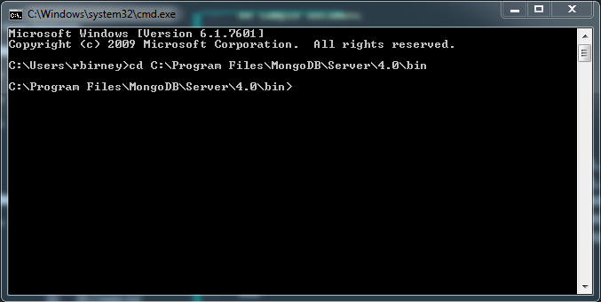
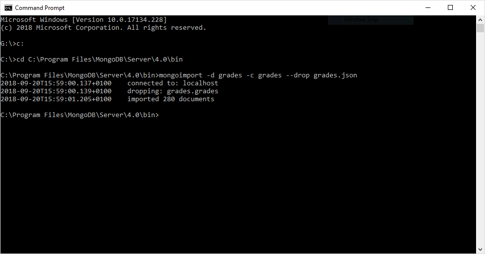
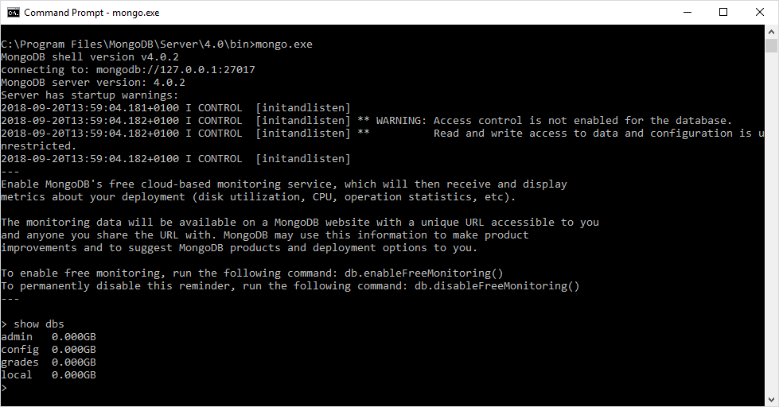
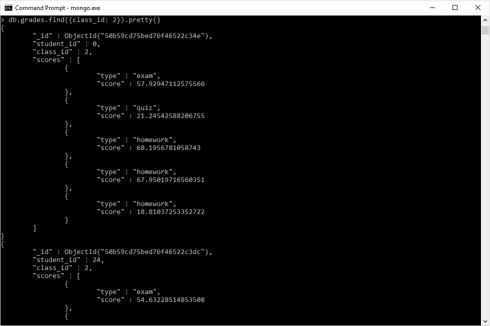

This lab introduces the CREATE functions in MongoDB.
Create or insert operations add new documents to a collection. If the collection does not currently exist, insert operations will create the collection.
MongoDB provides the following methods to insert documents into a collection:
db.collection.insert()
db.collection.insertOne()
db.collection.insertMany()In MongoDB, insert operations target a single collection. All write operations in MongoDB are atomic on the level of a single document.
Read operations retrieves documents from a collection; i.e. queries a collection for documents. MongoDB provides the following methods to read documents from a collection:
db.collection.find()You can specify query filters or criteria that identify the documents to return.
Update operations modify existing documents in a collection. MongoDB provides the following methods to update documents of a collection:
db.collection.update()
db.collection.updateOne()
db.collection.updateMany()In MongoDB, update operations target a single collection. You can specify criteria, or filters, that identify the documents to update. These filters use the same syntax as read operations.
Delete operations remove documents from a collection. MongoDB provides the following methods to delete documents of a collection:
db.collection.remove()
db.collection.deleteOne()
db.collection.deleteMany()In MongoDB, delete operations target a single collection. You can specify criteria, or filters, that identify the documents to remove. These filters use the same syntax as read and update operations.
In this lab, we will import a set of documents from a JSON file and then work with this data. The JSON file contains student grades with the following information:
_id : each document has an id property, which has as its value an oid (object id)student_id : each student has an id numberclass_id : each class has an id numberscores : scores is an array of objects. Each object contains two properties:type : a string, describing the score type (exam, quiz, or homework)score : a float, containing the score{
"_id" : { "$oid" : "50b59cd75bed76f46522c34e" },
"student_id" : 0,
"class_id" : 2,
"scores" : [
{ "type" : "exam", "score" : 57.92947112575566 },
{ "type" : "quiz", "score" : 21.24542588206755 },
{ "type" : "homework", "score" : 68.19567810587429 },
{ "type" : "homework", "score" : 67.95019716560351 },
{ "type" : "homework", "score" : 18.81037253352722 }
]
}C:\Program Files\MongoDB\Server\4.0\bin)
mongoimport -d grades -c grades --drop grades.jsonSyntax explained:
You should see the following output after a successful import:

show dbs command.
use grades
db.grades.find({class_id:2}).pretty()
We will discuss find() in greater detail in the next section. First, we will look at insert statements to add documents to our grades collection.
Inserts a document or documents into a collection.
The insert() method has the following syntax:
db.products.insert( { _id: 10, item: "box", qty: 20 } )This example creates a document in the products collection, with an id of 10, an item property with the value "box" and a qty property with the value 20. If the products collection does not exist, then the insert() method will create the collection.
_id FieldIf the document does not specify an _id field, then MongoDB will add the _id field and assign a unique ObjectId for the document before inserting. If the document does contain an _id field, the _id value must be unique within the collection to avoid duplicate key error.
_id FieldIn the following example, the document passed to the insert() method does not contain the _id field:
db.products.insert( { item: "card", qty: 15 } )During the insert, mongod will create the _id field and assign it a unique ObjectId value, as verified by the inserted document:
{ "_id" : ObjectId("5063114bd386d8fadbd6b004"), "item" : "card", "qty" : 15 }The ObjectId values are specific to the machine and time when the operation is run. As such, your values may differ from those in the example.
_id FieldIn the following example, the document passed to the insert() method includes the _id field. The value of _id must be unique within the collection to avoid duplicate key error.
db.products.insert( { _id: 10, item: "box", qty: 20 } )The operation inserts the following document in the products collection:
{ "_id" : 10, "item" : "box", "qty" : 20 }The following example performs a bulk insert of three documents by passing an array of documents to the insert() method. By default, MongoDB performs an ordered insert. With ordered inserts, if an error occurs during an insert of one of the documents, MongoDB returns an error without processing the remaining documents in the array.
The documents in the array do not need to have the same fields. For instance, the first document in the array has an _id field and a type field. Because the second and third documents do not contain an _id field, mongod will create the _id field for the second and third documents during the insert:
db.products.insert(
[
{ _id: 11, item: "pencil", qty: 50, type: "no.2" },
{ item: "pen", qty: 20 },
{ item: "eraser", qty: 25 }
]
)The operation inserted the following three documents:
{ "_id" : 11, "item" : "pencil", "qty" : 50, "type" : "no.2" }
{ "_id" : ObjectId("51e0373c6f35bd826f47e9a0"), "item" : "pen", "qty" : 20 }
{ "_id" : ObjectId("51e0373c6f35bd826f47e9a1"), "item" : "eraser", "qty" : 25 }The following example performs an unordered insert of three documents. With unordered inserts, if an error occurs during an insert of one of the documents, MongoDB continues to insert the remaining documents in the array.
db.products.insert(
[
{ _id: 20, item: "lamp", qty: 50, type: "desk" },
{ _id: 21, item: "lamp", qty: 20, type: "floor" },
{ _id: 22, item: "bulk", qty: 100 }
],
{ ordered: false }
){
"_id" : { "$oid" : "50b59cd75bed76f46522c34e" },
"student_id" : 0,
"class_id" : 2,
"scores" : [
{ "type" : "exam", "score" : 57.92947112575566 },
{ "type" : "quiz", "score" : 21.24542588206755 },
{ "type" : "homework", "score" : 68.19567810587429 },
{ "type" : "homework", "score" : 67.95019716560351 },
{ "type" : "homework", "score" : 18.81037253352722 }
]
}Run a find query to view the document you created ( db.grades.find({student_id:50}).pretty() )
Note that mongod has added an oid to the document
Use the insert() statement to insert multiple documents; add both of these documents with the same statement.
Run a find query to view the documents you created. You should now see three documents in this student's results.
Inserts a single document into a collection.
The insertOne() method has the following syntax:
db.products.insertOne( { item: "card", qty: 15 } );As with the insert() method, if the collection does not exist, then the insertOne() method creates the collection.
What's the difference? As you have seen, you can use the insert() statement to insert one document and to insert multiple documents. However, the insert() method is deprecated and no longer compatible with some MongoDB drivers and external applications, so insertOne() and insertMany() are used instead. For us, working in the console, any of the options will work.
_id FieldIn the following example, the document passed to the insertOne() method does not contain the _id field:
db.products.insertOne( { item: "card", qty: 15 } )The operation returns the following document:
{
"acknowledged" : true,
"insertedId" : ObjectId("56fc40f9d735c28df206d078")
}Because the documents did not include _id, mongod creates and adds the _id field and assigns it a unique ObjectId value.
_id FieldIn the following example, the document passed to the insertOne() method includes the _id field. The value of _id must be unique within the collection to avoid duplicate key error. Note: the use of try, catch and print here will provide more readable and user-friendly error messages.
try {
db.products.insertOne( { _id: 10, item: "box", qty: 20 } );
} catch (e) {
print (e);
}The operation returns the following:
{ "acknowledged" : true, "insertedId" : 10 }
Inserting an duplicate value for any key that is part of a unique index, such as _id, throws an exception. The following attempts to insert a document with a _id value that already exists:
try {
db.products.insertOne( { _id: 10, "item" : "packing peanuts", "qty" : 200 } );
} catch (e) {
print (e);
}Since _id: 10 already exists, the following exception is thrown:
WriteError({
"index" : 0,
"code" : 11000,
"errmsg" : "E11000 duplicate key error collection: inventory.products index: _id_ dup key: { : 10.0 }",
"op" : {
"_id" : 10,
"item" : "packing peanuts",
"qty" : 200
}
})_id: 10Inserts multiple documents into a collection.
The insertMany() method has the following syntax:
db.products.insertMany( [
{ item: "card", qty: 15 },
{ item: "envelope", qty: 20 },
{ item: "stamps" , qty: 30 }
] );The following examples insert documents into the products collection.
_id FieldThe following example uses db.collection.insertMany() to insert documents that do not contain the _id field:
try {
db.products.insertMany( [
{ item: "card", qty: 15 },
{ item: "envelope", qty: 20 },
{ item: "stamps" , qty: 30 }
] );
} catch (e) {
print (e);
}The operation returns the following document:
{
"acknowledged" : true,
"insertedIds" : [
ObjectId("562a94d381cb9f1cd6eb0e1a"),
ObjectId("562a94d381cb9f1cd6eb0e1b"),
ObjectId("562a94d381cb9f1cd6eb0e1c")
]
}_id FieldThe following example/operation uses insertMany() to insert documents that include the _id field. The value of _id must be unique within the collection to avoid a duplicate key error.
try {
db.products.insertMany( [
{ _id: 10, item: "large box", qty: 20 },
{ _id: 11, item: "small box", qty: 55 },
{ _id: 12, item: "medium box", qty: 30 }
] );
} catch (e) {
print (e);
}The operation returns the following document:
{ "acknowledged" : true, "insertedIds" : [ 10, 11, 12 ] }Inserting a duplicate value for any key that is part of a unique index, such as _id, throws an exception. The following attempts to insert a document with a _id value that already exists:
try {
db.products.insertMany( [
{ _id: 13, item: "envelopes", qty: 60 },
{ _id: 13, item: "stamps", qty: 110 },
{ _id: 14, item: "packing tape", qty: 38 }
] );
} catch (e) {
print (e);
}Since _id: 13 already exists, the following exception is thrown:
BulkWriteError({
"writeErrors" : [
{
"index" : 0,
"code" : 11000,
"errmsg" : "E11000 duplicate key error collection: inventory.products index: _id_ dup key: { : 13.0 }",
"op" : {
"_id" : 13,
"item" : "stamps",
"qty" : 110
}
}
],
"writeConcernErrors" : [ ],
"nInserted" : 1,
"nUpserted" : 0,
"nMatched" : 0,
"nModified" : 0,
"nRemoved" : 0,
"upserted" : [ ]
})Note that one document was inserted: The first document of _id: 13 will insert successfully, but the second insert will fail. This will also stop additional documents left in the queue from being inserted.
With ordered set to false, the insert operation would continue with any remaining documents.
try {
db.products.insertMany( [
{ _id: 13, item: "stamps", qty: 125 },
{ _id: 13, item: "tape", qty: 20},
{ _id: 14, item: "bubble wrap", qty: 30}
], { ordered: false } );
} catch (e) {
print (e);
}Use the insertMany() statement to insert multiple documents; add both of these documents with the same statement.
Run a find query to view the documents you created. You should now see six documents in this student's results.